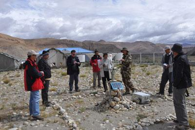

Initiated by CAS Project Geo-Surface Processes and Regional Adaptation to Climate Change in Himalaya Region”, a
seven-day field expedition to Koshi River Basin was conducted during July 2nd to 9th, 2010.
|
 |
| Experts visit Qomolangma Station(Picture/Institute
of Mountain Hazards and Environment) |
Ten experts from China, Nepal and International Centre for Integrated Mountain Development (ICIMOD) went
on this expedition. Experts traveled along the upper Koshi Basin, investigated the use of land resources, water
resource, hazards, biodiversity and regional economic development of Boqu River and Pengqu River in Xigaze,
Tibet. Moreover, experts visited the Geological Hazards Observation Station located in Zhangmu Town, Nielamu
County and Qomolangma Station for Atmospheric and Environmental Observation and Research, CAS located in Tashi
Dzong Village, Tingri County.
In this fieldtrip, experts traveled form subtropical climate zone at altitude 1700 meters to
cold mountainous areas at altitude 5300 meters in North Himalaya and accomplished this field mission
finally.
This field mission received full support from Tibet Science and Technology Department.